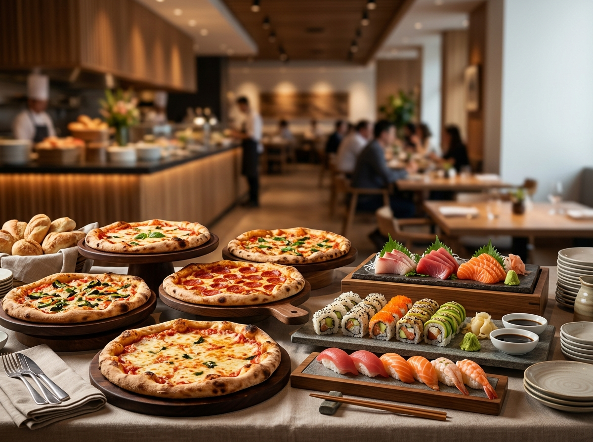
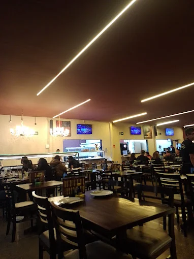
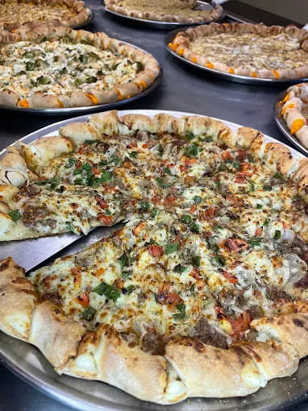
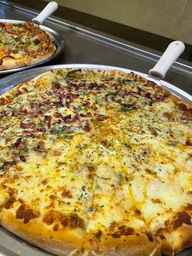
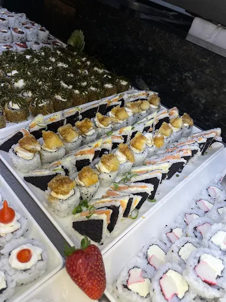
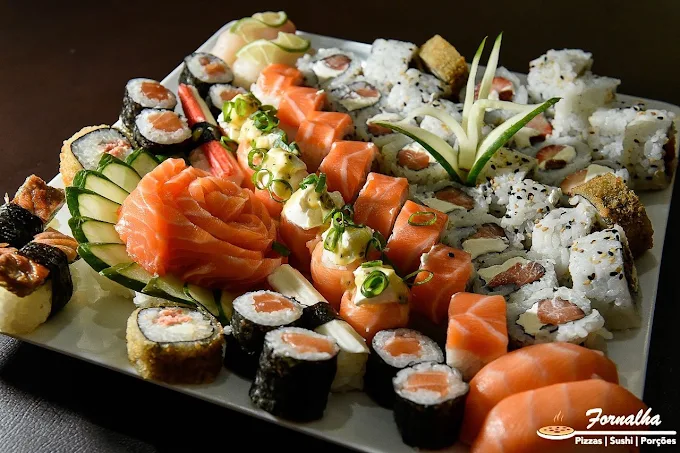
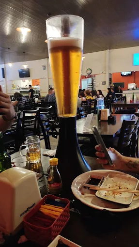

Pizzaria e sushi · Fazenda Rio Grande/PR
Rodízio de pizza e buffet de sushi em Fazenda Rio Grande
Pizza tradicional, especial e doce no rodízio — e um buffet de sushi e sashimi na mesma mesa. Ambiente familiar, tranquilo e com espaço kids.
4,3 no Google · 1.919 avaliações
Ticket médio R$ 40–80 por pessoa

Pizza e sushi no mesmo rodízio
Não precisa escolher. Rodízio de pizza com buffet de sushi e sashimi incluso.
Espaço kids
As crianças brincam, os adultos comem em paz. Ambiente tranquilo e familiar.
Todo mundo é bem-vindo
Casa reconhecida por acolher a comunidade LGBTQ+.
O que servimos
Rodízio, à la carte e delivery. A cozinha vai da pizza de massa fina ao sushi fresco — e ainda sobra espaço pra sobremesa.
-
Rodízio de pizza
Sabores tradicionais, especiais e doces, saindo do forno a noite inteira, direto na sua mesa.
-
Buffet de sushi e sashimi
Sushi fresco, sashimi e combinados, montados na hora. É o que mais aparece nas avaliações.
-
A Pizza Exagerada
A que virou bolo de aniversário de tanta gente. Venha com fome — o nome não é força de expressão.
Também atendemos para viagem e delivery.
O ambiente
Uma casa de bairro na Av. Brasil, em Fazenda Rio Grande, feita pra mesa cheia: família, aniversário, jantar de sexta. Ambiente tranquilo, sem correria, com espaço pras crianças brincarem enquanto a pizza não chega.
- Espaço kids
- Rodízio de pizza
- Buffet de sushi
- Ambiente familiar
- Delivery próprio
- Acolhe a comunidade LGBTQ+






Quem veio, contou
Nota 4,3 no Google, de 1.919 avaliações de quem já veio.
Comida maravilhosa, pizza incrível, sushi melhor ainda, ambiente super família, tem um espaço kids, e o atendimento é ótimo, recomendo e com certeza irei voltar.
Ao invés do bolo tradicional de aniversário, nosso filho pediu a Pizza Exagerada da Fornalha. O negócio é realmente exagerado! Deliciosa, bem recheada e de massa fina, enfim, maravilhosa.
Ótima experiência, amei o buffet de sushi, as pizzas também têm vários sabores novos e diferentes. Ambiente agradável e super familiar, amo a soda italiana de maçã verde!
Onde estamos
Av. Brasil, 1709 – Eucaliptos, Fazenda Rio Grande/PRCEP 83820-262
Horário
- Terça a domingoa confirmar
- SegundaFechado